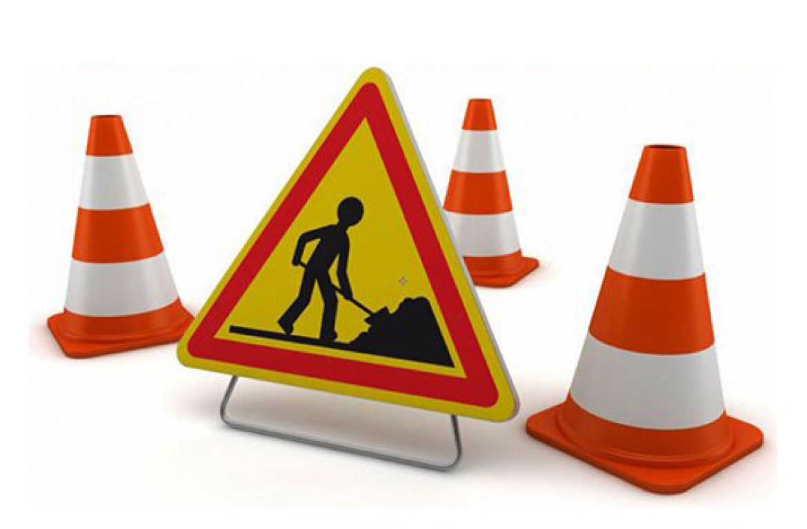

Page en construction !
Page en construction !
Page en construction !
Les mots-clef
appelé
"keywords"
Ils sont très importants et aussi contrôlé
par les robots des moteurs de recherche, l’idéale est de trouvé des combinaisons
de mots clef qui représente chaque page, elle peut contenir
au maximum 100 mots clés ou 1 000 caractères.
Beaucoup diront que cette pratique est obsolète de nos jours,
mais j’aime penser que cela varie d’un moteur de recherche à un autre
Descriptif du site
Pour amélioré le référencement,
chaque page a besoin d’une description,
celle-ci apparait quand le moteur de recherche affiche les résultats.
Pour optimiser cette description, elle doit contenir
entre
140 et 160 caractères, soit pas plus de 25 mots
Le contenu
Pour améliorè le référencement,
chaque page as besoin d’un contenu,
c’est-a-dire un nombre minimal de mots.
Pour optimiser ce contenu, elle doit idéalement contenir
400 et 600 mots.
Les titres
C’est surtout
une bonne pratique qu’il faut respecter.
Il est idéale
que chaque page doit contenir un seul titre principal
quelques titres secondaires
et des titres tertiaires non limité
Les médias ( images, vidéo )
Pour optimiser la qualité des images, il me faudrait une taille assez
grande que j’adapterais,
car il est préférable de
rétrécir une grande image qu’agrandir une petite image.
C’est surtout
une bonne pratique qu’il faut respecter.
Il est idéale
que chaque image possède une description et un titre.
Les partenaires
Les partenaires peut être un gros plus
le but est de
s’échanger
les liens de la page principale
d’une prod, d’un groupe, voire une maison de disque
La location
A toi de me dire si tu préfères être visible dans
la région ou tu résides,
ou
plus large encore, même toute la France,
cela peut changer les résultats du référencement.
Définir un théme
Page en construction !
Page en construction !
Page en construction !
Le choix des icônes des réseaux sociaux
La meilleure solution pour augmenter ta visibilité et de mettre
tous les réseaux possible ou tu es présent ou même en
ajouter
par exemple
Spotify et/ou Deezer
je t’ai présentè quelques icônes, l’idéale est de garder
le mêmes types
pour tous les réseaux,
mêmes couleurs et style
Le choix de bordures
je peux mettre en valeur de
différentes façon,
autant sur
l’épaisseur, la couleur et aussi avec des nuances
je te ferais une page avec différentes bordures que tu choisiras.
L’icône de l’onglet
J’ai trouvé une image que j’ai travaillé pour afficher
une icône dans l’onglet,
mais est-ce la meilleure ?
il est peut-être préférable de trouvé une
icône plus clair
avec des couleurs plus sobre ?
Les couleurs favorites
Pour donner un joli graphisme, il faudrait
au moins 4 couleurs différentes
que je mettrais ensuite en valeur grâce à des variations
pour que la lisibilité reste optimale.
Le choix des images de fond
besoins de savoir si tu préfères des images plutôt
sombres ou clair
avec des motifs ou sans le plus important et de
trouver l’harmonie
parfaite en restant dans l’air du temps.
Le choix des bordures
je peux mettre en valeur de différente façon,
autant sur
l’épaisseur, la couleur et aussi avec des nuances
je te ferais une page avec différentes bordures que tu choisiras.